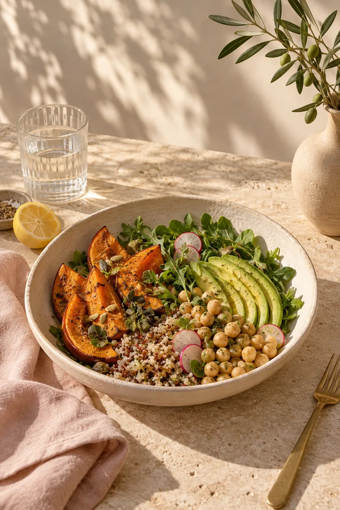
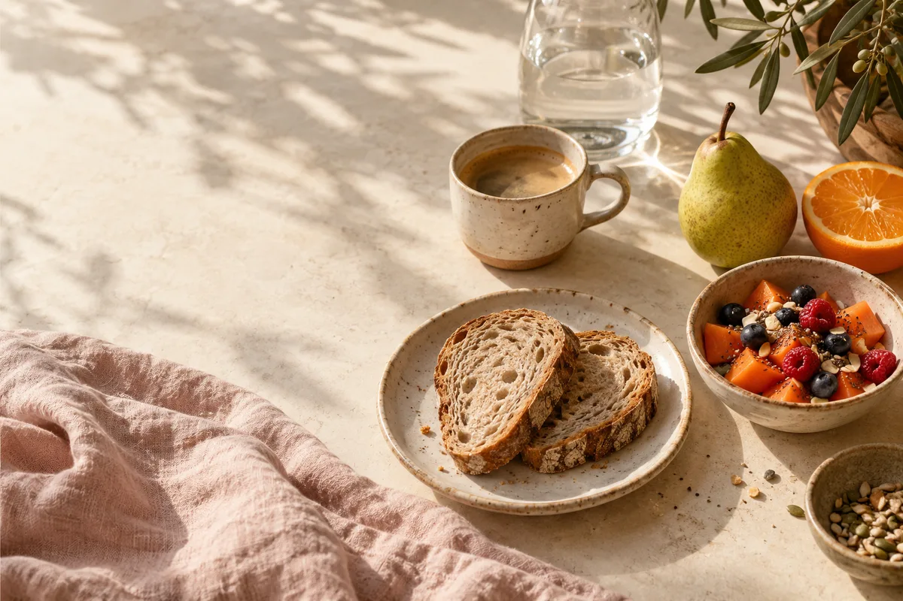

Nutrir o corpo.Acolher a vida.
Uma alimentação que faz sentido para você. Com equilíbrio, prazer e espaço para a vida real.

Antes do prato,
vem a sua história.
Para Fernanda, alimentação também é rotina, memória, cultura e afeto. O cuidado começa conhecendo quem você é, suas possibilidades e o que faz sentido no seu dia a dia.
- Sua rotina
- Horários, hábitos e possibilidades entram na conversa para construir mudanças possíveis.
- Suas preferências
- O prazer de comer e a sua história com a alimentação têm lugar no cuidado.
- Seu momento
- Seus objetivos e o que você vive hoje ajudam a orientar cada próximo passo.
Um caminho construído
com você.
Da primeira conversa aos ajustes do caminho, suas necessidades e sua vida fazem parte do cuidado.
Primeiro, a escuta.
Conhecer sua história, sua alimentação, sua rotina e o que você espera do acompanhamento. Suas dúvidas também fazem parte dessa conversa.
Um plano com sentido.
Construir objetivos e orientações que consideram suas necessidades, preferências e possibilidades. O cuidado ganha direção junto com você.
Ajustar também é cuidar.
Rever o caminho, conversar sobre as dificuldades e reconhecer cada passo. A rotina muda, e o acompanhamento abre espaço para esses ajustes.

Um primeiro passo.
No seu ritmo.
Conheça a proposta, leve suas perguntas e encontre um começo que faça sentido para você. Horários, valores e formas de atendimento são combinados no agendamento.
Agendar uma consultaFernanda Lemos · Nutricionista em Passos, MG
nutrifernandalemos.com.br ↗